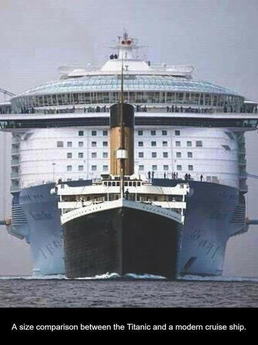

For You
Following
globe_asia
Everyone can reply
image
gif_box
ballot
sentiment_satisfied
calendar_clock
location_on
James Lucas
verified @JamesLucasIT ·20h
more_horiz
Thread on the real size of things 🧵
1. Titanic compared to a modern cruise ship
1. Titanic compared to a modern cruise ship

mode_comment 1K
repeat 13K
favorite 138K
bar_chart 22M
bookmark
upload
RVCJ Media
verified @RVCJ_FB ·20h
more_horiz
Auto Driver
mode_comment 159
repeat 284
favorite 6.3K
bar_chart 484K
bookmark
upload

Elon Musk
verified @elonmusk ·11h
more_horiz
Starlink now constitutes roughly 2/3 of all active Earth satellites
mode_comment 3K
repeat 9.1K
favorite 82K
bar_chart 13M
bookmark
upload
The Khel India
verified @TheKhelIndia ·20h
more_horiz
KAPIL PARMAR CREATES HISTORY 🤯
- Kapil became First Ever Indian Judoka to win a Medal at the Paralympics / Olympics 🥉
- 25th Medal for Team India 🇮🇳
WELL DONE KAPIL 🫶
- Kapil became First Ever Indian Judoka to win a Medal at the Paralympics / Olympics 🥉
- 25th Medal for Team India 🇮🇳
WELL DONE KAPIL 🫶
mode_comment 69
repeat 991
favorite 8.2K
bar_chart 85K
bookmark
upload